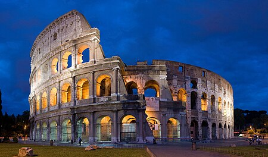

העיר - שם העיר
רומא, בירת איטליה, היא מקום הולם שמקורותיה מתפשטים לארכי ההיסטוריה האנושית. העיר מתמקמת בלב איטליה והיא מודל חיה לשילוב מושלם בין העבר להווה. רומא מתהדרת בשמות נוספים כמו "עיר האזור הנצחי" ו"העיר הנצחית", והיא אמורה להיות אחת מעריהן הישנות ביותר בעולם.
העיר משקפת את ההיסטוריה הגדולה של האימפריה הרומית במקראיותה, וכל רחבי רומא ממשכים לשאוב מאמנטים מהעבר. עם מבנים היסטוריים כמו הפורום הרומאי, הקולוסיאום והפנתאון, רומא היא מקום שבו יושבים העתיקות העזיבות עם העכשוויות.
רומא היא יחידה של תרבות, אמנות, ואדריכלות, והכניסה לכל רחוב בעיר הופכת למסע בתוך יצירת אמנות גדולה. המטייל יכול למצוא כאן את המזון האיטלקי הטעים ביותר, ליהנות מהפרקט השופע של המסעדות והקפטריות, ולהתרטע באווירה הרומנטית והסוחפת של העיר הנצחית.
רומא היא לא רק מרכז הדת הנוצרית, אלא גם מקום שבו נפגשות תרבויות, צבעים ואנרגיות שונות, יחד עם תחושת נועזות וחיים מושקעים. העיר מזמינה את המבקרים לחוות את האירועים ההיסטוריים בהם נקמעה, ולהתרטע בתוך רוחה הייחודית של רומא.
תיאור נוסף על ר ומא...